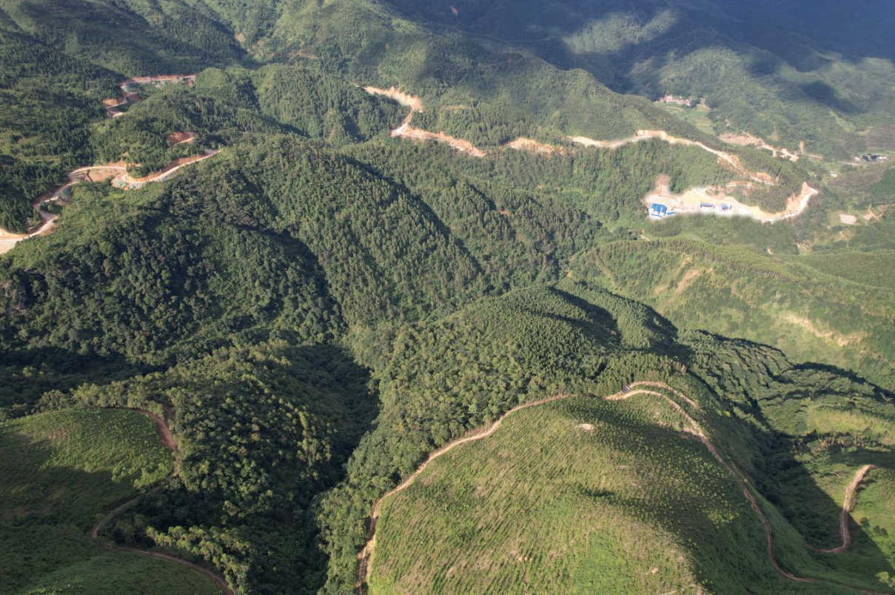
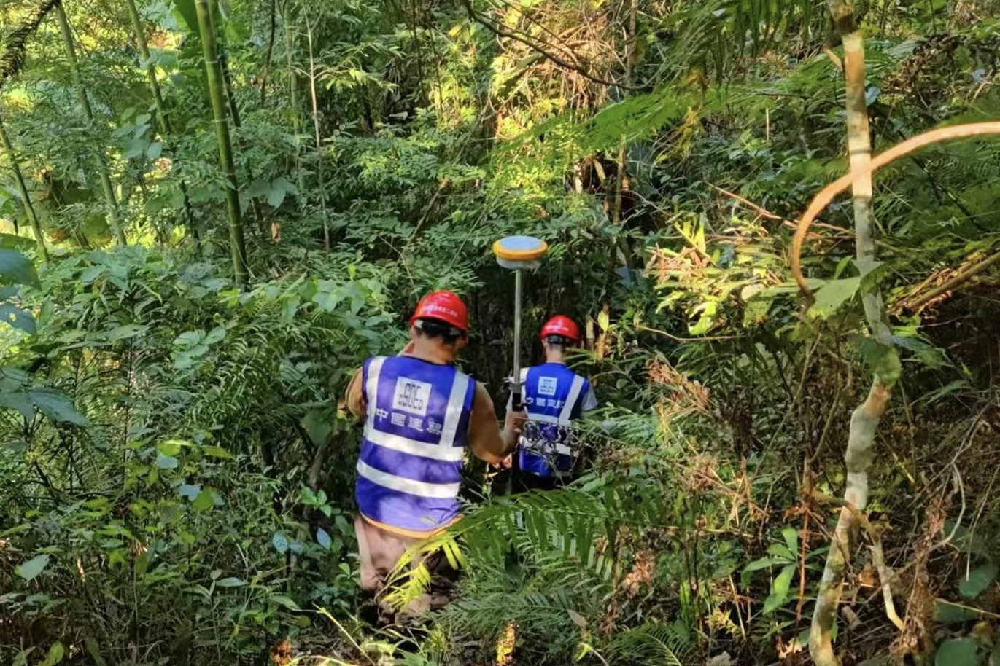
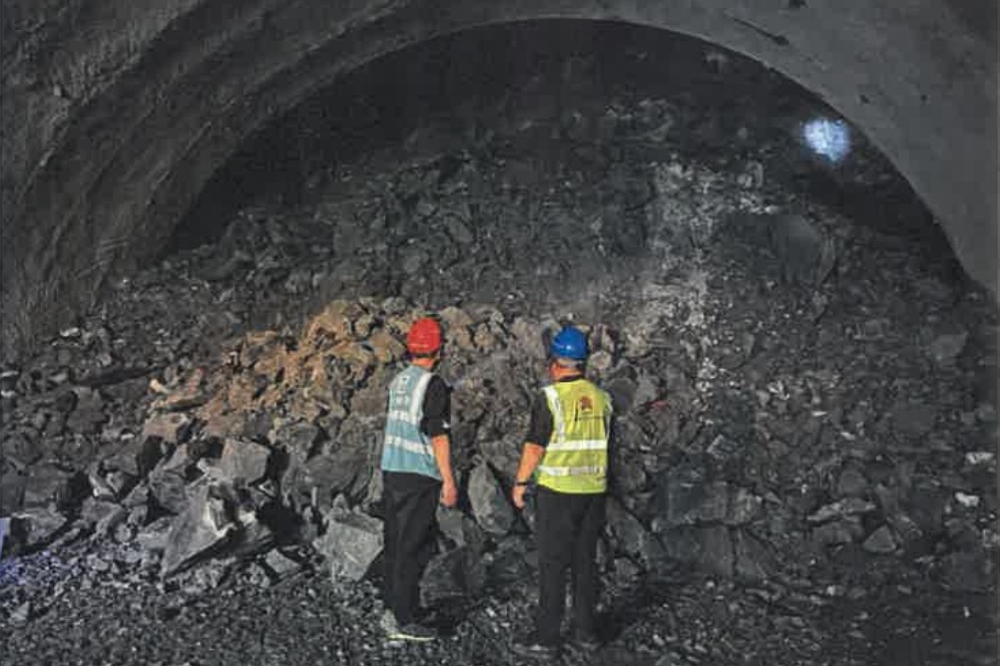
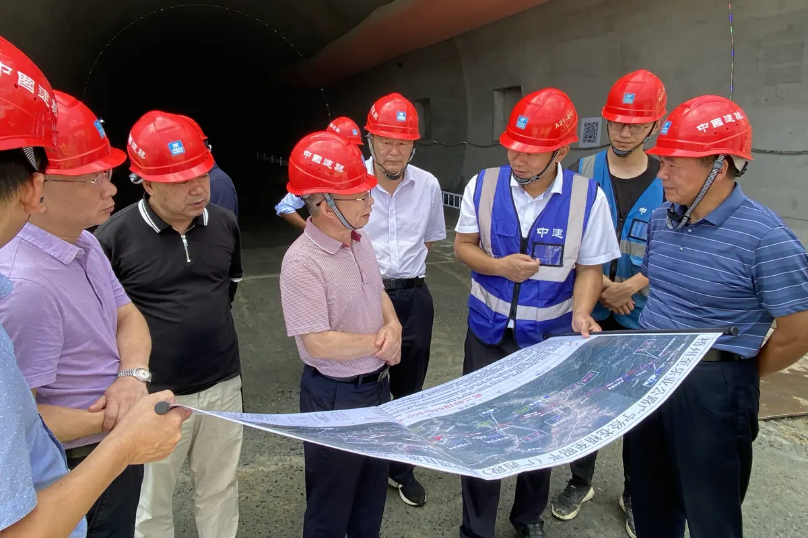
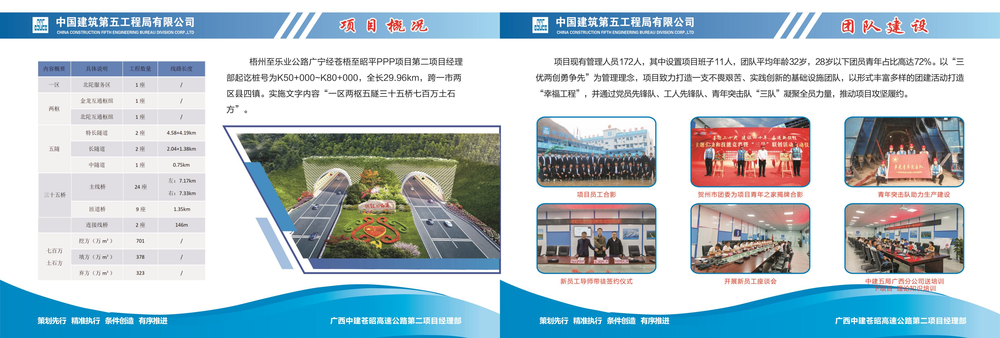
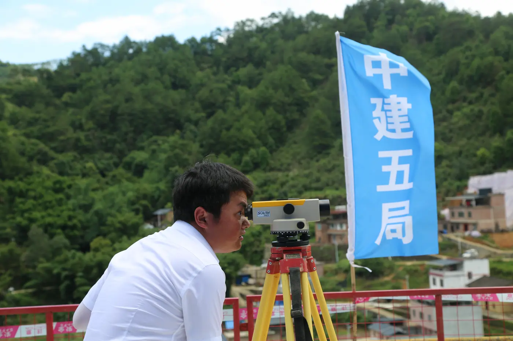
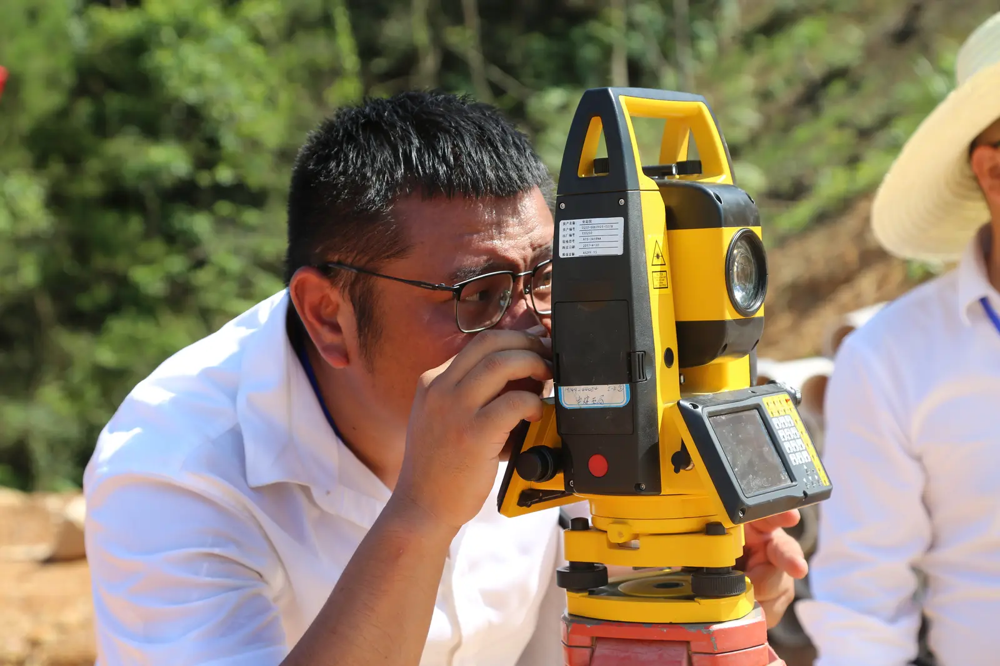
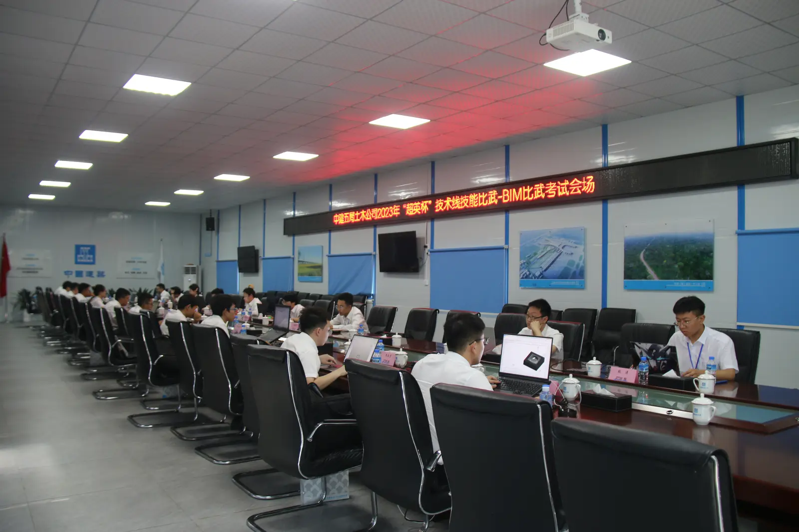
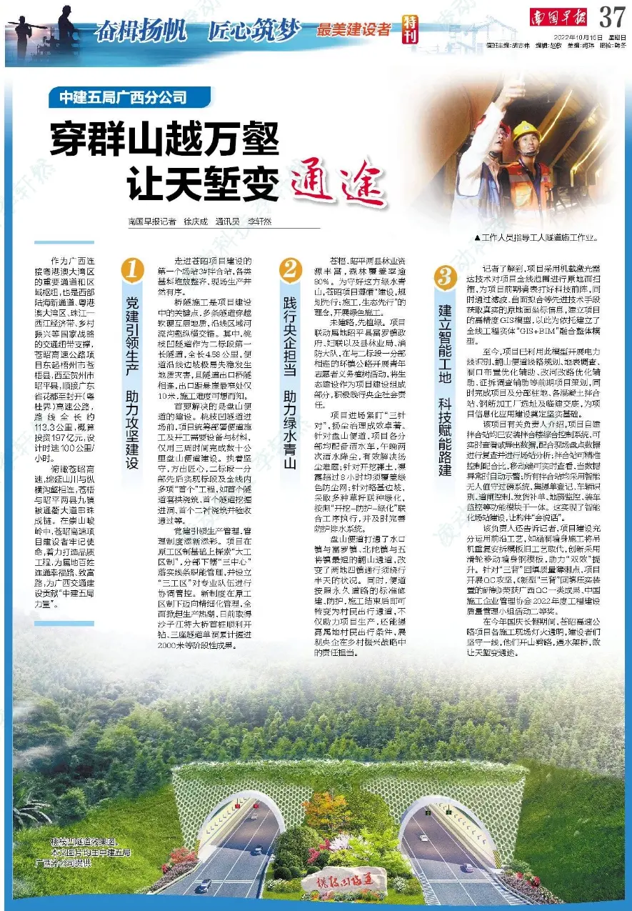

CASE 03 / PROJECT COMMUNICATION
苍昭高速
工程项目传播
在工程现场，让建设过程成为可理解的传播内容。
从隧道建设现场到重大施工节点，我参与项目新闻、现场图像、画册及宣传片脚本等内容工作，将施工中的进展、技术与人物转化为可以阅读的项目故事。

01 / FIELD STORYTELLING
先走进现场，
再寻找能讲清楚的事
高速公路的建设进度，写在山体、隧道和施工工序里。项目传播从了解实际建设内容开始：哪些画面能说明工程状态，哪些人物与细节能让读者看见现场的工作。


02 / CONSTRUCTION MILESTONE
当单洞掘进，
越过一万米
“破万米”不只是一个数字。围绕这一建设节点，项目推送把施工进展与一线画面放在一起，让工程进度获得更具体的阅读入口。


03 / PROJECT NARRATIVE
把工程材料，
整理成项目叙事
画册汇集项目概况与建设现场；宣传片脚本则将路线与建设背景、工程推进、建设者故事组织成前后连贯的内容。两种载体共同服务于复杂项目信息的对外表达。

SCRIPT / CONTENT宣传片内容策划
宣传片内容策划
与脚本撰写
脚本以工程建设为主线，依次进入项目背景、品质工程与建设者三个层面；我参与内容策划、文字组织和拍摄跟进。
- 01项目与交通建设背景
- 02施工进展与品质工程
- 03建设现场与团队人物




05 / EXTERNAL MEDIA
让建设现场，
进入更广的阅读视野
项目素材也进入外部媒体报道。工程建设与现场人物在项目之外继续被看见，让一线记录成为更多人理解这段建设过程的入口。

NEWSPAPER / 南国早报穿群山越万壑，
穿群山越万壑，
让天堑变通途
建设现场、工程进展与一线建设者，共同构成一份项目报道的画面与文字。
06 / REFLECTION
从复杂现场，
找到清晰的表达
工程进展需要准确记录，也需要让项目之外的读者看得懂。现场采访、图片、项目资料与成品内容之间的转换，训练了我从具体事实出发组织传播的能力。
先看清建设正在发生什么，
再决定用什么方式把它讲出来。
CASE INFO
项目与职责
工程新闻与节点内容现场采访与摄影项目画册内容协同宣传片脚本撰写拍摄跟进项目活动传播
- PROJECT
- 广西苍昭高速公路项目
- CONTEXT
- 工程项目传播